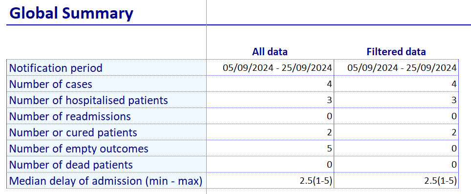

Analyses sheet
This sheet contains several tables for defining different types of analyses and their corresponding graphs:
- a table to defining a “Global Summary” section, containing general indicators
- a table for defining analyses on single variables: “Univariate Analysis”
- a table for defining analyses crossing two variables: “Bivariate Analysis”
- three tables for defining time series and their graphs: “Time Series Analysis”, “Labels for Time Series Graphs”, “Graph on Time Series”
- two tables for defining spatio-temporal analyses: “Specification for Spatio-Temporal Analysis”, “Spatio-Temporal Analysis”
Flowchart to help you figure out which of these tables to use for different analyse:

Global Summary
The “Global Summary” table summarises certain indicators for the current epidemic. It has 3 columns:
Summary Label: free text field for entering a short but explicit label describing the analysis
Summary function: free text field for entering the Excel formula that will display the desired indicator. See the formula specifications here.
Format: dropdown menu for defining the **display format* of the expected result (see variable format)
Example
Definition in the setup file:

Display in the linelist:

Univariate Analysis
The “Univariate Analysis” table is used to describe analyses based on a single variable.
It has 10 columns:
Section: this is a free field used to group univariate analyses on a theme, for example all the tables grouping patient characteristics. It makes it possible to navigate between sections in the linelist using the “Go to section” dropdown menu.
Table title: this is a free field for entering the name of the table with the analyses. It should be fairly explicit and short.
Group by variable (row): this is a static dropdown menu containing the variables that can be analysed. Only categorical variables with known modalities can be used (i.e. “choice_manual” and “choice_formula” variables).
Add missing data: this is a yes/no field used to indicate whether you want to count missing data for the selected variable.
Summary function: this is a free field in which to enter the formula corresponding to the desired analysis. The formula must always be written without the “=” sign and in English, whatever the language in which the setup file is written (see the formula specifications here for more informations on formulas).
If you want to count the numbers of rows for each modality of the grouping variable, use the N function.
You are however not limited to counts, and can use Excel formulas, as long as the formula returns a single value:
median(lenght_stay)mean(age_years) & " (" & min(age_years) & " - " & max(age_years) & ")"
Summary label: this is a free field which corresponds to the label which will be displayed above the results column.
Format: this is a static dropdown menu with a pre-selection of possible display formats (see variable format for more information)
Add percentage: this is a yes/no field used to indicate whether you want to see the results as a percentage as well as a value. If “yes”, a “%” column will be added to the right of the “summary function” column in the linelist.
Add graph: this is a yes/no field used to indicate whether you want a vertical bar graph near the table.
If the previous “Add percentage” option is set to “yes”, the percentage will be displayed on the secondary vertical axis of the graph.
Flip coordinates: this is a yes/no field used to indicate whether you want the graphic to be displayed horizontally rather than vertically.
If the “Add percentage” and “Flip coordinates” options are set to “yes”, the graph will not contain the percentages, as the two options are incompatible and the vertical display of the graph will prevail.
A “Note” message will be displayed in the “__checkRep” sheet.
Example
Definition in the setup file:
Display in the linelist:
Summary
| Column | Type | Mandatory | Details |
|---|---|---|---|
| Section | Free text | Yes | Group tables by section |
| Table title | Free text | Yes | Short title |
| Group by variable (row) | Dropdown | Yes | One categorical variable to summarise |
| Add missing data | Dropdown (yes/no) | Add rows with missing values counts? | |
| Summary function | Free text | Yes | N to count rows, other formulas accepted |
| Summary label | Free text | Name of the summary | |
| Format | Dropdown | Format of the summary | |
| Add percentage | Dropdown (yes/no) | ||
| Add graph | Dropdown (yes/no) | ||
| Flip coordinates | Dropdown (yes/no) | Inverse x and y axis of the graph |
Bivariate Analysis
The “Bivariate Analysis” table is used to describe analyses that cross two variables.
It has the following columns:
Section: this is a free field used to group analyses on a theme, for example all the tables grouping patient characteristics. It will also be possible to navigate between sections in the linelist using the “Go to section” dropdown menu.
Table title: this is a free field for entering the name of the table with the analyses. It should be fairly explicit and short.
Group by variable (row): this is a static dropdown menu containing the variables that can be analysed. Only categorical variables with known modalities can be used (i.e. “choice_manual” and “choice_formula” variables).
Group by variable (column): this is a static dropdown menu containing the variables that can be analysed. Only categorical variables with known modalities can be used (i.e. “choice_manual” and “choice_formula” variables).
Add missing data: this is a dropdown menu with 4 possible options, which allows you to indicate whether you want to count missing data for the selected variable(s):
- no: missing data is not added
- row: missing data is added to variables in rows
- column: missing is are added to variables in columns
- all: missing data is added to both column and row variables
Summary function: this is a free field in which to enter the formula corresponding to the desired analysis. The formula must always be written without the “=” sign and in English, whatever the language in which the setup file is written (see the formula specifications here for more informations on formulas).
If you want to count the numbers of rows for each modality of the grouping variables, use the N function. You are however not limited to counts, and can use Excel formulas, as long as the formula returns a single value.
Summary label: this is a free field which corresponds to the label which will be displayed above the results column.
Format: this is a static dropdown menu with a pre-selection of possible display formats (see variable format for more information).
Add percentage: this is a yes/no field used to indicate whether you want to see the results as a percentage as well as a value. If yes, a “%” column will be added to the right of the “summary function” column in the linelist.
Add graph: this is a yes/no field used to indicate whether you want a vertical bar graph.
If the previous “Add percentage” option is set to “yes”, the percentage will be displayed on the secondary vertical axis of the graph.
Flip coordinates: this is a yes/no field used to indicate whether you want the graphic to be displayed horizontally rather than vertically.
If the “Add percentage” and “Flip coordinates” options are set to “yes”, the graph will not contain the percentages, as the two options are incompatible and the vertical display of the graph will prevail.
A “Note” message will be displayed in the “__checkRep” sheet.
Example
Definition in the setup file:
Display in the linelist:
Summary
| Column | Type | Mandatory | Details |
|---|---|---|---|
| Section | Free text | Yes | Group tables by section |
| Table title | Free text | Yes | Short title |
| Group by variable (row) | Dropdown | Yes | One categorical variable to summarise |
| Group by variable (column) | Yes | ||
| Add missing data | Dropdown (no/row/column/all) | Add missing values counts? | |
| Summary function | Free text | Yes | N to count rows, but formula accepted |
| Summary label | Free text | Name of the summary | |
| Format | Dropdown | Format of the summary | |
| Add percentage | Dropdown (yes/no) | ||
| Add graph | Dropdown (values/percentage) | ||
| Flip coordinates | Dropdown (yes/no) | Inverse x and y axis of the graph |
Time series Analysis
Time series analyses and graphs are defined using 3 different tables:
- one to define the table(s) (and the series to add to the graphs)
- one to define the list of associated graphs and their metadata
- one to define the characteristics of graphs (the series to be plotted)
See a diagram at the end of the section.
Time series analysis
The first table is used to define the different tables. It has 12 columns, and one line represents one summary per variable.1 If you take the option to add a total or missing values, or if the variable is categorical, the table created will have several columns.
Series ID: this is acalculated field: each row in this table is automatically assigned a ID, which is used in particular to define graphs.
Section: this is a free field which can be used to combine analyses on a theme in a single table, for example patient characteristics over time. Each section corresponds to a table in the linelist. They are displayed one above the other, and it is possible to navigate between them using the “Go to section” dropdown menu.
Time variable (row): this is a static dropdown menu containing all date variables from the dictionary.
Do not force other type of variables, such as a week or a year variable: the linelist has the functionality to switch between date, weeks, months and years for the display.
Group by variable (column): this is a static dropdown menu containing the variables that can be analysed. Only categorical variables with known modalities can be used (i.e. “choice_manual” and “choice_formula” variables). It is also possible to leave this field empty, and define the analysis solely on the basis of a formula in the “Summary function” field (for example, taking the median delay before admission across time, without any grouping).
Title (header): this is a calculated field. It is the name which will be displayed at the top of the table, above the corresponding analyses. It is made up of the “summary label” (described below), the label of the “time variable (row)” and the label of the variable to be analysed (“Group by variable (column)”, if any).
Add missing data: this is a yes/no field which allows you to indicate whether you want to count missing data for the selected variable. If yes is selected, a column with the missing values will be added to the right of the other columns created for each mode of the variable to be analysed.
Summary function: this is a free field in which to enter the formula corresponding to the desired analysis. The formula must always be written without the “=” sign and in English, whatever the language in which the setup file is written (See the formula specifications here for more information).
If you want to count the numbers of rows across time use the N function. You are however not limited to counts, and can use Excel formulas, as long as the formula returns a single value.
If you use the N function without specifying a grouping variable, the function will simply count the number of non-empty cells in the chosen time variable.
Summary label: this is a free field which corresponds to the label used to create the “Title header” and which is used to label the column containing the results of the “summary function”.
Format: this is a static dropdown menu with a preselection of possible display formats (see variable format for more information).
Add percentage: this is a static dropdown menu with 3 options:
No: no percentage is added
Row: there is an additional column to the right of each value listed to show the percentage according to the time scale. The percentage is calculated on the total number of patients in the row.
Column: there is an additional column to the right of each value listed to show the percentage according to the time scale. The percentage is calculated on the total number of patients in the column.
Add total: this is a yes/no field used to add a row at the bottom of the table in with the totals for the entire period selected.
Table Order: this is a read field which can be used to reorganise the order of analyses in the final table without having to modify the order of lines in the setup. By default, analyses are displayed from left to right in the order in which they are described in the Time series Analysis table in the setup.
| Column | Type | Mandatory | Details |
|---|---|---|---|
| Series ID | - | Automatic | |
| Section | Free text | Yes | Group columns by section |
| Title | - | Automatic | |
| Add missing data | Dropdown (yes/no) | Add missing values counts? | |
| Summary function | Free text | Yes | N to count rows, but formula accepted |
| Summary label | Free text | Name of the summary | |
| Format | Dropdown | Format of the summary | |
| Add percentage | Dropdown (column/row/no) | ||
| Add total | Dropdown (yes/no) | ||
| Table order | Free text |
Labels for Time Series Graphs
The second Time Series table is used to define the titles and order of the graphs associated with the time series defined above.
The table has 3 columns:
- Graph title: this is a free text field for naming the graph
- Graph order: this is a free text field which allows you to organise the graphs in the desired order.
- Graph ID: this is an automatically calculated field, with the ID incremented by 1 on each line.
One line represents one graph.
| Column | Type | Mandatory | Details |
|---|---|---|---|
| Graph title | Free text | Yes | Short title |
| Graph order | Free text | Yes | |
| Graph ID | Automatic | Yes |
Graph on Time Series
This table is used to define the characteristics of each graph.
One line represent one series to plot on a graph, and a graph can have one or more series. A graph with the number of each outcome over time would thus be represented by as many lines as there are of types of outcomes (or as there are modalities that you wish to show on the graph).
Graph title: this is a dropdown menu fed by the “Labels for Time Series Graphs” table. To define a graph, it must first be named in the previous table. Use the same graph title in different rows to indicate that several series should be on the same graph.
Series title: this is a dropdown menu fed by the “Time Series Analysis” table. It is used to link a graph to the characteristics of a group of series (variables to be displayed).
Graph ID: this field is filled in automatically once the “Graph Title” has been selected.
Series ID: this field is automatically filled in once the “Series title” has been selected.
Graph order: this field is filled in automatically once the “Graph title” has been selected. To change the order in which the graphs are displayed, simply change the order in the “Labels for Time Series Graphs” table; it is not necessary to change the order of the lines.
Time variable (row): this field is automatically filled in once the “Series title” has been selected. It searches for the time variable defined for the time series.
Group by variable (column): this field is filled in automatically once the “Series title” has been selected. It searches for the variable to be calculated defined for the time series.
Choices: this is a dynamic dropdown menu updated once the “Series title” has been selected. It displays the choices for the variable to be calculated.
Label: this is a free text column that contains le label corresponding to the choice, which will appear in the graph legend.
Plot values or percentage: this is a static dropdown menu with two options: values or percentages, which lets you choose whether to display the results in the graph as values or percentages.
Chart type: this is a static dropdown menu with three options: bar, line or dot. This lets you choose between 3 pre-selected chart types (bar, line or dot). Chart display can be customised directly from the linelist.
Y-Axis: this is a static dropdown menu with two options: left or right, which lets you choose which side of the Y axis to display. This is particularly useful for displaying two different pieces of information on a single graph (e.g. Epicurve with the number of deaths in value and the CFR in %).
| Column | Type | Mandatory | Details |
|---|---|---|---|
| Graph title | Dropdown | Yes | Defined in the previous table |
| Series title | Dropdown | Yes | Choose which variable summary to plot (ex: counts for outcomes) |
| Graph ID | - | Automatic | |
| Series ID | - | Automatic | |
| Graph order | - | Automatic | |
| Time variable (row) | - | Automatic | |
| Group by variable (column | - | Automatic | |
| Choices | Dropdown (variable modality) | Yes | Choose modality to plot (ex: deads) |
| Label | Free text | Label of the modality | |
| Plot values or percentages | Dropdown (values/percentage) | Yes | |
| Chart type | Dropdown (bar/line/point) | ||
| Y-axis | Dropdown (left/right) |
Example
Definition in the setup file:
Display in the linelist:
Diagrams

Spatial Analysis
The spatial analyses are described in a table with 11 columns. They are described in a similar way to the bivariate analyses, the difference being that the variables chosen for the rows are necessarily variables containing geographical data.
Section: this is a free field used to define blocks of analyses on the same theme. It will also be possible to navigate between sections in the linelist using the “Go to section” dropdown menu.
Table Title: this is a free field for entering the name of the table with the analyses. It should be fairly explicit and short.
Geo/HF variable (row): this is a dynamic dropdown menu containing all variables of type “hf” or “geo”.
N geo max: This is the maximum number of lines you want to see for each analysis. (e.g. if you want a top 10, enter 10).
Group by variable (row): this is a static dropdown menu containing the variables that can be analysed. In other words, variables with known modalities, i.e. choice_manual and choice_formula variables. If the field remains empty, we will just count the number of occurrences per modality of the chosen time variable and these are the Ns (defined with the “N geo max” variable).
Add missing data: this is a yes/no field used to indicate whether you want to count missing data for the selected variable.
Summary function: this is a free field in which to enter the formula corresponding to the desired analysis. The formula must always be written without the “=” sign and in English, whatever the language in which the setup file is written (see the formula specifications here for more informations on formulas).
If you want to count the numbers of rows for each modality of the grouping variable, use the N function.
Summary label: this is a free field which corresponds to the label which will be displayed above the results column.
Format: this is a static dropdown menu containing a pre-selection of possible display formats (see variable format for more information).
Add percentage: this is a yes/no field used to indicate whether you want to see the results as a percentage as well as a value. If yes, a “%” column will be added to the right of the “summary function” column in the linelist.
Add graph: this is a yes/no field used to indicate whether you want a vertical bar graph.
If the previous “Add percentage” option is set to yes, the percentage will be displayed on the secondary vertical axis of the graph.
Flip coordinates: this is a yes/no field used to indicate whether you want the graphic to be displayed vertically or horizontally.
If the “Add percentage” and “Flip coordinates” options are set to “yes”, the graph will not contain the percentages, as the two options are incompatible and the vertical display of the graph will prevail.
A “Note” message will be displayed in the “__checkRep” sheet.
Example
Definition in the setup file:
Display in the linelist:
Spatio-Temporal Analysis
Spatio-temporal analyses and graphs are defined using 2 different tables:
- A “Specification for Spatio-Temporal Analysis” table
- A “Spatio-Temporal Analysis” table
Specification for Spatio-Temporal Analysis

The table has 3 columns:
Section: this is a free field which can be used to combine analyses on a theme in a single table, for example patient characteristics over time. Each section corresponds to a table in the linelist. They are displayed one above the other, and it is possible to navigate between them using the “Go to section” dropdown menu.
N geo max: This is the maximum number of lines you want to see for each analysis. (e.g. if you want a top 10, enter 10).
Spatial type: this is a static dropdown menu with two options, geo or hf. This defines the type of geographic variable to be used in the section (a geo variable or a health facility).
Spatio-Temporal Analysis

The table has 10 columns:
Section (select): this is a dropdown menu created automatically and fed by the “Specification for Spatio-Temporal Analysis” table.
Time variable (row): this is a static dropdown menu containing time variables. In other words, variables of type date.
Geo/HF variable (column): this is a dropdown menu created automatically and fed by the “Specification for Spatio-Temporal Analysis” table.
N geo max: this field is automatically filled in on the basis of the section selected and defined in the previous “Specifications for Spatio-Temporal Analysis” table.
Title (header): this is a calculated field. It is the name which will be displayed at the top of the table, above the corresponding analyses. It is made up of the summary label (described below), the label of the time variable (row) and the label of the selected geographic variable (column).
Spatial type: this field is automatically filled in on the basis of the section selected and defined in the previous “Specifications for Spatio-Temporal Analysis” table.
Summary function: this is a free field in which to enter the formula corresponding to the desired analysis. The formula must always be written without the “=” sign and in English, whatever the language in which the setup file is written (see the formula specifications here for more informations on formulas).
If you want to count the numbers of rows for each modality of the grouping variable, use the N function.
Summary label: this is a free field which corresponds to the label which will be displayed above the results column.
Format: this is a static dropdown menu with a pre-selection of possible display formats (see variable format for more information).
Add graph: this is a yes/no field used to indicate whether you want a vertical bar graph.
Example
Definition in the setup file:
Display in the linelist file:
Footnotes
ex: counts for the different types of outcomes; or median for the length of stay)↩︎